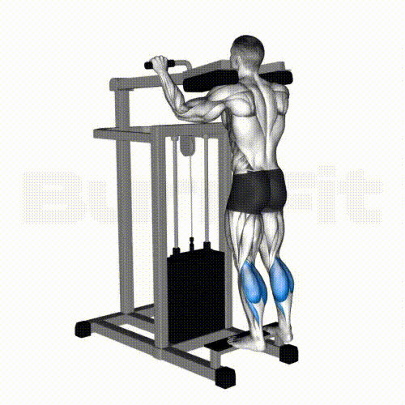
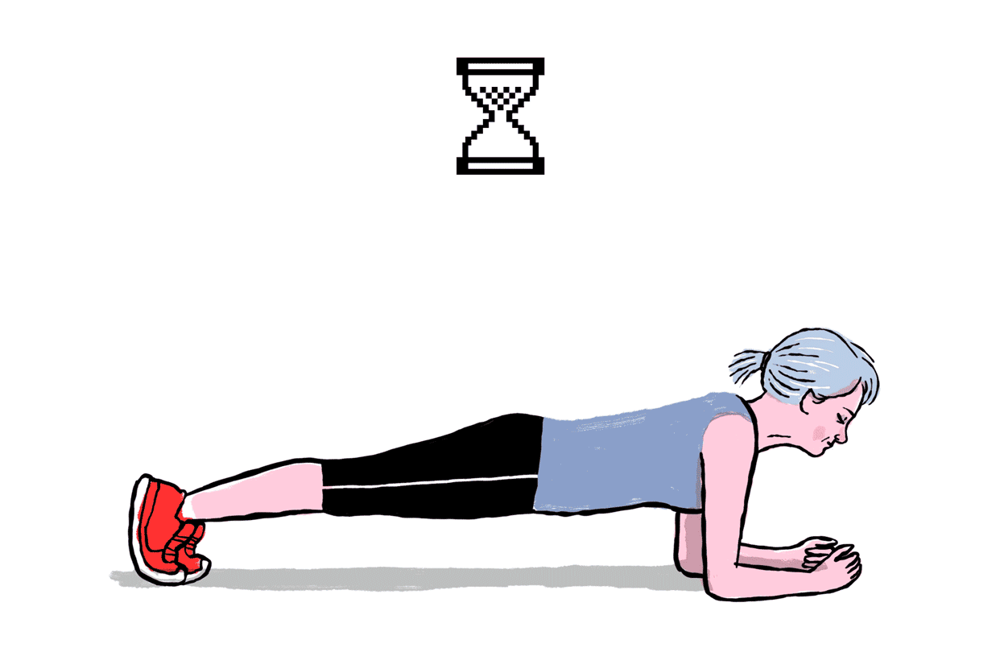
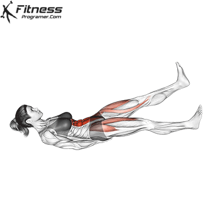
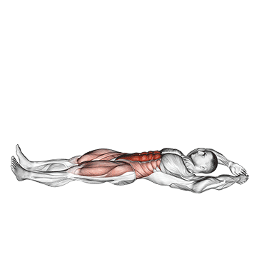
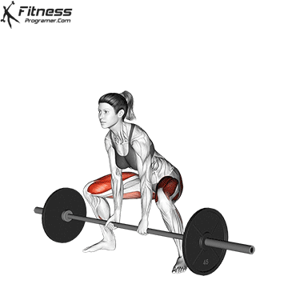
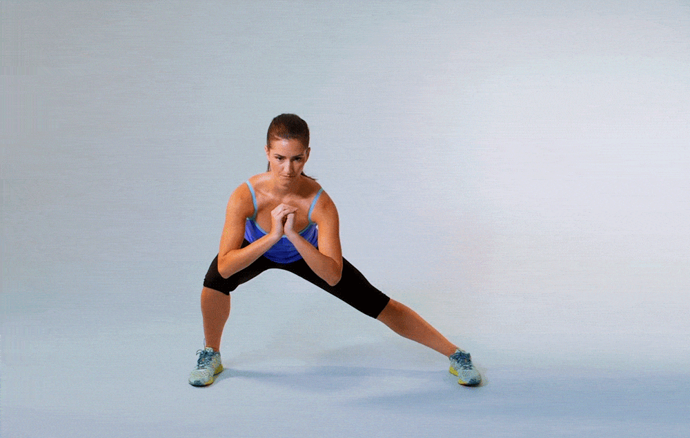

Day 1: Upper Body Strength + Cardio
- Push-ups: 10-15 reps
- Dumbbell Shoulder Press: 12 reps

- Bent-over Rows: 12 reps

- Bicep Curls: 15 reps

- Tricep : 15 reps

- Lat Pulldowns: 12 reps

- Arnold Press: 12 reps

- Lateral Raises: 12 reps

- Cardio: 10-15 minutes of interval sprints
Day 2: Lower Body Strength
- Squats: 12-15 reps
- Walking Lunges: 12 reps each leg
- Deadlifts: 12 reps

- Step-ups: 12 reps each leg

- Glute Bridges: 15 reps

- Dumbbell Goblet Squat: 12 reps each leg

- Calf Raises: 15-20 reps 
- Sumo Squats: 12 reps
- Finisher: 100 bodyweight squats
Day 3: Full Body HIIT
- Burpees: 40 seconds
- Jump Squats: 40 seconds

- Mountain Climbers: 40 seconds

- Plank to Push-up: 40 seconds
- High Knees: 40 seconds
- Jump Rope: 40 seconds
- Box Jumps: 40 seconds
- Cooldown: 5 minutes
Day 4: Core + Cardio
- Plank: 1 minute hold 
- Russian Twists: 30 seconds
- Bicycle Crunches: 20 reps
- Leg Raises: 15 reps

- Side Plank: 30 seconds each side
- Flutter Kicks: 30 seconds 
- Toe Touches: 15 reps
- V-ups: 15 reps 
- Cardio: 20-30 minutes steady-state cardio
Day 5: Lower Body + Core
- Lunges: 12 reps each leg

- Sumo Deadlifts: 12 reps 
- Jump Squats: 15 reps
- Side Lunges: 12 reps each leg 
- Hip Thrusts: 15 reps

- Romanian Deadlifts: 12 reps

- Kickbacks: 12 reps each leg
- Core Finisher: Plank, Hollow Hold, Reverse Crunches
Day 6: Full Body Strength + Cardio
- Squats: 12-15 reps
- Push-ups: 10-12 reps
- Dumbbell Rows: 12 reps

- Dumbbell Chest Press: 12 reps

- Overhead Press: 12 reps

- Renegade Rows: 10 reps each side

- Goblet Squats: 12 reps
- Cardio: 15-20 minutes of HIIT cardio
Day 7: Rest Day (Saturday)
Active Recovery (optional): Yoga, stretching, or walking (20-30 mins).